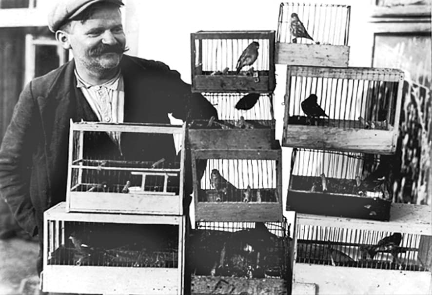

În mitologia greacă, minotaurul a creat un labirint din care niciunul dintre tinerii atenieni n-a reușit să iasă până când Ariadna i-a aruncat lui Tezeu firul roșu salvator.
În zilele noastre, un minotaur cu două capete, Petrică Răchită și Răzvan Chiruță, a creat cel mai mare labirint al minciunilor, în care trebuia să sucombe Arhiepiscopul Teodosie al Tomisului.
Dar tocmai când își savurau triumful distrugător, ei au uitat de Ariadna și de soluția ei salvatoare.
Minotaurul a fost omorât de Tezeu. Pe Petrică Răchită și pe Răzvan Chiruță îi va ucide, ca ziariști, adevărul…
În mitologia greacă, minotaurul a creat un labirint din care nimeni n-a putut ieși până când Ariadna i-a aruncat lui Tezeu firul roșu salvator.
În zilele noastre, un minotaur cu două capete, Petrică Răchită și Răzvan Chiruță, ziariști investigatori la România liberă, care a însemnat cea mai mare decepție și o uriașă dezamăgire în ceea ce privește probitatea profesională, au creat un formidabil labirint al minciunilor, în care au căzut victime nu numai colegii lor de breaslă, dar și procurorii care, îmi pare că pentru prima dată, s-au autosesizat în cel mai scurt timp împotriva locului în care exista cea mai mică probabilitate pentru un act de corupție, care, oricum, le exceda competențele. N-a mai ieșit nimeni din acea încrengătură de neadevăruri, de minciuni fățișe, de calomnii oarbe, de imagini manipulate, de declarații contradictorii, de mistificări de toate felurile, în întregime îndreptate împotriva celui mai nevinovat om cu putință, Arhiepiscopul Teodosie al Tomisului. Dar atunci când, în culmea gloriei, și-au contemplat opera distrugătoare și abjectă, cultura lor clasică fiind probabil cu desăvârșire absentă, ei au uitat de firul Ariadnei, cu care Adevărul avea să străbată, întocmai precum Tezeu, cărările întortocheate și pline de primejdii pentru ca să umple cu lumina și ardoarea sa atât întreaga Arhiepiscopie a Tomisului, cât și sufletele noastre. Ar fi trebuit să știe că adevărul va învinge, întotdeauna, dar mai cu seamă atunci când victima se urmărea să fie un slujitor al lui Dumnezeu.
E cert că pentru ca să minți, să înșeli sau să mistifici sunt necesare calități deosebite, pe care nu oricine le are. Iar pentru calomnie, care se insinuează lent, tacit, dar letal, cu precădere ai nevoie de o memorie bună, ca să nu-ți uiți diferitele declarații. Din păcate, cei doi ziariști investigatori ai ziarului România liberă n-au excelat nici măcar în acest domeniu, în care înțeleg că ar fi vrut să fie leaderi. Ei au uitat cu mare ușurință ceea ce au arătat sau au spus când au răspuns diverselor invitații primite la momentul lor de triumf. Cine se punea cu ei pe-atunci? Ei bine, am să le prelungesc eu acea efemeră celebritate, însă într-un mod în care cu siguranță că nu și l-ar fi dorit. Căci, vor sau nu vor, numele lor nu pot să nu rămână în Istoria Bisericii Ortodoxe Române drept eroii celei mai abjecte misiuni: să pândească, să înșele, să trădeze în prima săptămână din Postul Mare, să intre cu camera ascunsă la spovedanie pentru ca să-l prindă și să-l piardă pe Arhiepiscopul Tomisului, părintele spiritual al atât de multor oameni. Cinstit vorbind, asta e ceea ce și-au dorit: să distrugă un nevinovat care nu le greșise cu nimic, să-l livreze autorităților și să fie condamnat.
Agatha Christie arată că trecerea timpului, în mod paradoxal, lucrează în favoarea aflării adevărului. A trecut delirul declanșat pe 5 mai și imaginea unor planuri mafiote, bine instrumentate și puse la punct în interiorul Bisericii, s-a stins. Puterea minții și a cuvântului vor învinge cele cinci luni de investigații făcute de Petrică Răchită și Răzvan Chiruță, sub încuviințarea șefului lor din umbră, Dan Cristian Turturică. Să fi fost oare cu adevărat cinci luni de investigații? Chiar așa de dezolant de slab să le fi materializat?
Căutarea adevărului se aseamănă cu munca arheologilor care dezgroapă un vas de mare preț. Cu o extremă grijă și cu religiozitate, ei înlătură pământul, nisipul, depunerile de reziduuri până când vasul își recapătă discret frumusețea de dinainte de a fi sucombat prin cine știe ce cataclism, acoperit fiind de toate acele murdării dintre care niciuna nu a reușit să-i stingă strălucirea. Dar timpul i-a sporit infinit valoarea și revenirea la o nouă viață va fi ocrotită de prețuirea noastră.
Am căutat și eu adevărul printre gunoaie, l-am curățat, l-am lustruit și vi-l prezint acum cu bucuria descoperitorului.
În trei luni, acuzele și epitetele la adresa Arhiepiscopului Tomisului, Înaltpreasfinția Sa Teodosie, s-au transformat radical. Acum, se vorbește despre înscenare, discreditare, defăimare, șantaj, abjecție, nevinovăție, martiraj. Unii dintre cei mai buni ziariști sau vip-uri au fost consternați de lovitura pe care a primit-o atunci Biserica Ortodoxă Română, fără s-o clintească, fără s-o atingă. Și vor fi din ce în ce mai mulți, și vor fi din ce în ce mai supărați, cu cât vor fi mai mulți și mai tineri, după cum îi vedea condamnatul Socrate. Alessandra Stoicescu a vorbit despre înscenare, Floriana Jucan a vorbit despre discreditare și martiraj, Alina Stancu a vorbit despre defăimare, Florian Bichir se întreba retoric unde este mita găsită de procurori, Radu Mazăre socotea că e urât, rușinos și mizerabil faptul că în România am ajuns să ducem arhiereii la parchet pe nevinovate, Dan Diaconescu arăta cum se poate distruge un om inocent și imaginea sa, pr. Anghel Dincu vorbea despre oameni de joasă speță și de abjecție, Paula Iacob despre o lovitură dată Bisericii, etc.
În fapt, ce-au vrut rătăciții aceștia? Păi, după percepția lor, Biserica Ortodoxă nu mai este azi ceea ce era înainte și au dorit s-o curețe de impurități. La Radio Sky, Petrică Răchită a declarat: „E dureros pentru noi că s-a ajuns în această situație ca Biserica să nu mai reprezinte ceea ce era cândva”, iar la TV Neptun Răzvan Chiruță a susținut că a realizat „ancheta” de la Constanța din dorința de a curăța Biserica Ortodoxă. Ce-ar fi dacă fiecare, în loc să-și vadă propriile greșeli și să înceapă salubrizarea cu propria-i persoană, și‑ar aroga dreptul de a curăța Biserica noastră, conform cu concepțiile lor despre morală? România liberă a început cu Arhiepiscopul Teodosie, „inamicul public numărul unu”, „marea primejdie socială”, pentru care un procuror a trebuit să fie rechemat din concediu, lucru trist și adevărat.
Între armele pe care le pregăteau cei de la România liberă se afla și șantajul. De două ori, în două declarații diferite, Petrică Răchită vorbește despre niște înregistrări care vor fi făcute publice la un moment oportun. De asemenea, ei nu au predat procurorilor toate înregistrările făcute, este un lucru pe care îl recunosc într‑o altă emisiune. Acest lucru echivalează cu a scoate din context celelalte înregistrări al căror adevăr ar putea fi alterat de neprezentarea lor în integralitate.
Fondul problemei este acum cât se poate de clar. Acuzația procurorilor, și vom reveni la aceasta, este de luare de mită. Însă, la Radio România Actualități, Petrică Răchită a declarat că Înaltpreasfinția Sa nu a cerut niciodată, nimic: „Nu, Înaltul nu a cerut niciodată nimic, asta-i clar. Nu a cerut nimic”.
De fapt, fragmentul este mult mai savuros: „Până-n momentul acela, Înaltul vă ceruse bani, vă ceruse mită? Nu, Înaltul nu a cerut niciodată nimic, asta-i clar. Nu a cerut nimic. V-a oferit preoția? Ne-a oferit promisiunea preoției. Gratis? Nu gratis. Păi dacă nu v-a cerut nimic! Nu, nu a cerut nimic”.
Abia după asta începe să acuze diferite persoane că i-ar fi cerut bani, sau i-ar fi spus că se obișnuiește să faci un cadou ierarhului. Dar și de data asta se contrazice.
Petrică Răchită declară textual: „Eu m-am oferit să dau un cadou pentru răsplata… cum bine știți, acum ne jucăm de-a șoarecele cu pisica, de-a ancheta, de-a toate cele…”. Deci, „eu m-am oferit”, și în scurta lui declarație mai spune odată că s-a oferit și aprobă de asemenea desfășurarea evenimentelor prin care a dorit să ofere ceva, fără ca măcar să pomenească de vreo hirotonie. Deci, nu este adevărat că preoții de la Arhiepiscopie au cerut ceva, atâta vreme cât el era cel care s-a oferit să facă un cadou Înaltpreasfințitului Arhiepiscop al Tomisului. Dar dacă s-a întâmplat să fie cadoul un element de veșmânt arhieresc, care aparține de drept Bisericii, și dacăs Petrică Răchită însuși vorbește, poate dintr‑o scăpare, numai despre donație, ce vină au preoții și ce vină avem noi că nu i-a mai ieșit pasiența acuzatoare? N-ar fi primul caz în care cel ce sapă groapa altuia cade singur în ea. A rămas cu banii dați și, după legiuirile bisericești, nici nu‑i mai poate cere înapoi. Cum și de ce să mai ceri banii înapoi la șase luni după ce te-ai oferit să cumperi ca donație pentru Biserică o mitră sau un engolpion?
Chiar și despre bani, ziariștii nu sunt foarte siguri nici când, nici cum, nici câți bani au dat, și probabil că nici cui, dar de dat sunt siguri că i-au dat! Oricum, la Înaltpreasfinția Sa Teodosie nu a ajuns nimic. Marea lor dilemă și nemulțumire, la care le răspund acum, este că au dat banii într-o benzinărie din București, ultra modernă și nou construită, dar unde ei vedeau că mișună samsarii, circulă interlopii, se vând mașini, astfel că mă întreb și eu care îmi alimentez mașina la orice oră în stațiile PECO din București, oare sunt în siguranță sau riscurile mă pândesc din clipa-n care deschid capacul rezervorului de benzină?
O altă problemă cheie este înscrierea la Facultatea de Teologie Ortodoxă a Universității Ovidius din Constanța. Și aici se pare că vorbim o altă limbă, sau măcar înțelesul cuvintelor nu este același pentru toată lumea. Arhiepiscopia Tomisului a arătat că Petrică Răchită n-a fost nicio clipă înscris la Facultatea de Teologie și că nici acum nu este student acolo. I-au lipsit: foaia matricolă, au recunoscut asta în chiar ziarul lor, în România liberă din aceeași zi în care a apărut și filmul, iar secretara i-a spus textual că „fără asta nu se poate”, diploma de bacalaureat în original, adeverința medicală în original și să fi fost măcar semnată de doctorul care-a emis-o, decizia de înmatriculare și semnătura Înaltpreasfinției Sale Teodosie precum și a domnului rector Victor Ciupină. Adeverința medicală de înscriere cu care ziaristul era sigur că a fost înscris era cu siguranță o plastografie, pentru că niciun medic nu eliberează o adeverință medicală nedatată iar falsul acesta este grosolan realizat. Dar cât de proști ne crede pe toți dacă își imaginează că cineva îl poate lua în serios la prezentarea unor astfel de acte? Mai mult, ele te duc cu gândul la faptul că și celelalte pot fi falsificate, astfel că devii încă și mai bănuitor.
De asemenea, n-au plătit nici taxa de înmatriculare în anul întâi, taxă de 25 de milioane, lucru recunoscut de ei într-o emisiune de la B1TV. Totuși, cu cât dovezile că nu au fost și nu aveau cum să fie înscriși la Facultate sunt din ce în ce mai multe și mai imparabile, Petrică Răchită devine încă și mai exaltat în a susține că a fost înscris. Chiar dacă el însuși spune cu alte ocazii că de fapt n-a mers până la capăt tocmai ca să nu provoace „un păcat atât de grav cum este simonia”, insistența cu care susține că a fost înscris la facultate și că de-acolo nu l-a exmatriculat nimeni, recte, este student în continuare, crește odată cu dovezile care conving pe toată lumea, numai pe el nu. Mă-ndoiesc că există vreun mod oarecare prin care să i se explice că totuși n-a fost înscris și să accepte și el lucrul acesta. Va merge până în pânzele albe.
Primul act antedatat în toată această tristă poveste este cererea adresată de Petrică Răchită Înaltpreasfinției Sale Arhiepiscopul Tomisului de a-i acorda binecuvântarea necesară pentru a urma Facultatea de Teologie. Este completată de mâna lui și bineînțeles, antedatată. A fost realizată chiar de el însuși și poartă data de 10 septembrie 2008. Repet, este cel dintâi act antedatat. Oricum, facultatea n-ar fi rămas ancorată în trecut, pentru că existau chitanțierele care nu suportau antedatări. Chitanța taxei de înscriere poartă data 6 martie 2009! Iar numărul de înregistrare care este posibil să-i fi fost dat nu poate fi decât tot din 6 martie, și poate tocmai pentru că este așa, acest număr nu a apărut niciodată.
Domnul rector Victor Ciupină declară și el că nu figurează ca student în anul întâi, dar se răspunde la toate aceste argumente irefutabile prin sofismul că „dacă s‑ar fi înscris și ar fi terminat facultatea, ar fi fost un preot prost care ar fi mutilat sufletele oamenilor”, păcat ce s-ar fi reflectat cu siguranță asupra părintelui Cosmin Brăescu și a Înaltpreasfinției Sale, care au dat binecuvântarea arhierescă și recomandarea frecventării celor patru ani de cursuri de teologie.
Mă gândesc, oare ce înseamnă pentru jurnalist „a fi înscris la facultate”? Dacă înseamnă să-ți scrii numele pe o hârtie care să se afle în interiorul facultății, atunci putem să fim de acord că în acea accepție a cuvântului, a fost înscris. Dar dacă înseamnă că avea dreptul să frecventeze anul întâi și să-l promoveze, să dea examene, avea carnet de student, avea legitimație de student și beneficia de orice drept pe care-l presupunea studenția, atunci vorbim despre o lume care-i era deocamdată închisă presupusului candidat.
Iar dacă în mod evident, înscrierea la facultate înseamnă pentru ei altceva decât pentru noi, atunci e foarte probabil ca și alte cuvinte să aibă alt înțeles: mită, mitră, donație, șpagă, cadou, bani, spovedanie, servicii, dovadă, etc.
Doresc totuși să-l liniștesc pe Petrică în privința răului pe care l-ar fi putut provoca de-ar fi ajuns un preot consternant de prost pregătit. Nu trebuia să-și facă probleme, pentru că dacă n-ar fi reușit să recupereze un semestru de prezență și să-și susțină examenele de anul întâi, putea să rămână repetent până ar fi trecut de primul handicap, sau se putea să fie exmatriculat din Facultate, ca și de la seminar, astfel încât sita se cernea și rămâneau drept absolvenți doar cei care probabil că meritau titlul acesta.
Tot ca element de acuzare este adus și argumentul că soluțiile le-au dat Înaltpreasfințitul, Arhiepiscopia, dar nu ei! Ei doreau doar să devină preoți, nu să fie studenți! Dar în chiar primele secvențe din filmul pe care ei l-au realizat, în secvența din curtea catedralei se vede și se aude cum Arhiepiscopul întreabă: „Ce diplomă să-ți pun eu la dosarul de hirotonie?” iar el răspunde: „Dau un examen la Facultatea de Teologie, n-am nicio problemă să…”. Deci, soluția a dat-o chiar el, iar nu Arhiepiscopul. Iată deci o nouă minciună, pe lângă toate celelalte.
Trecând peste faptul că nu e adevărat, după cum ușor se poate vedea în film, necesitatea înscrierii la Facultatea de Teologie a fost o nouă dovadă că fără studii superioare nu mai poți efectiv să ajungi preot. Nimic nu „le-a fost pus pe tavă”, după cum se exprimă într-o emisiune la Radio România Actualități.

Considerându-se un bun credincios în realitate, Petrică Răchită se duce fără să clipească la cercetarea canonică în vederea stabilirii dacă e potrivit pentru o carieră preoțească și minte de stinge, își minte copios arhiereul. Asta însemna pentru el sfânta taină a spovedaniei și astfel înțelegea el să curețe Biserica Ortodoxă Română, respectiv, intrând cu camera ascunsă la spovedanie!
Întrebarea „Ești bogat?”, pe care i-o pune arhiereul, face parte dintre întrebările pe care era dator să i le pună în condițiile în care dorea diaconia, lucrul acesta este scris în canoanele Bisericii Ortodoxe. Se face o reală și corectă cercetare a candidatului la hirotonie, dar lucrul acesta, laicul Petrică n-avea cum să-l știe. Să scoți din context întrebările care ți-au fost puse în vederea cercetării canonice pentru hirotonie și să le dai înțeles de corupție, este un act atât de abject, încât cred că nimeni, de când creștinismul există, nu și-a permis așa ceva. E trist că acesta e genul de întâietate care nu-i repugnă minotaurului modern.
Despre hirotonie, o altă Sfântă Taină, pentru Petrică Răchită totul era ca și rezolvat, deși nici măcar nu începuse alcătuirea dosarului și în continuare nu exista o diplomă ce-ar fi putut să-i fie inclusă. Diploma de seminar nu era necesară la înscrierea în facultatea de teologie, dar cei doi considerau că trebuie contrafăcută și că li se promisese acest lucru. „Hai să facem o diplomă de seminar mâine la părintele Moise”. Hotărât lucru, părintele Eugen Tănăsescu, directorul postului Radio Dobrogea, avea dreptate, „se pare că nu înțelegeau sensul cuvintelor” - remarcă făcută într-un dialog cu cei doi, la Radio România Actualități.
Tot ceea ce declară odată Petrică Răchită sau Răzvan Chiruță se poate regăsi sub o formă contrară în alte declarații. Este doar o chestiune de îndelungă răbdare să le găsești corespondența.
De mai multe ori, ziariștii spun că, în mod voit n-au mers până la capăt și că au demonstrat că dac-ar fi făcut-o, ceea ce au pretins ei s-ar fi adeverit: ar fi fost preoți, pentru Cipru sau cu o parohie în țară, sau prin mânăstire, sau ar fi fost diaconi, amândoi sau măcar unul dintre ei, cred că oricare, ar fi fost înscriși cu toate drepturile la Facultatea de Teologie, fiind în prealabil posesorii unor false atestate de la seminarul teologic, ba chiar și ai unor diplome de facultate confecționate la cerere peste noapte, toate aceste realizări fiind împlinite prin intermediul unor multe și mari sume de bani, pe care nu le-au dat, dar care ar fi fost necesare fie pentru ca să li se deschidă cele mai înalte uși, recte, ușa arhiepiscopului Tomisului și ușa rectoratului Universității Ovidius, fie pentru înlesnirea unei discuții cu Înaltpreasfinția Sa în curtea catedralei, la ieșirea de la slujbă. Iar pentru faptul că a oferit avansul unei mitre arhierești și a fost încuviințată achiziționarea ei, justițiarii își exprimă satisfacția că parchetul general a început urmărirea penală împotriva Înaltpreasfinției Sale Teodosie, Arhiepiscopul Tomisului.
Problema răchitiană sau chiruțiană este că toate realizările sunt de fapt ipotetice, deși ei pretind că le-au obținut, sau că le-ar fi obținut dac-ar fi mers până la capăt, lucru pe care tot ei recunosc că nu l-au făcut. De ce oare cred ei că de-ar fi continuat, ceilalți ar fi mers exact în direcția pe care o doreau ei? Cine le spune că ceilalți ar fi mers până la capăt? Iar demonstrația lor este cam de genul acesta: „Am demonstrat că dac-am fi mers până la capăt, am fi ajuns preoți, sau am fi fost înscriși, dar ne-am retras, sau n-am avut cele 25 de milioane pentru înscriere”.
Din start, nici lucrul acesta nu este adevărat. Ei au vrut să meargă până la capăt, o spun tot în emisiunea de la Radio România Actualități: „noi voiam să mergem până la capăt”, dar n-au reușit, deși în aceeași emisiune declară și: „aveți cuvântul nostru de onoare că n-am fi mers până la capăt”, iar toate demonstrațiile pe care le mai fac sunt ca zbaterea peștelui pe uscat, și la fel de sterile.
În articolul publicat în România liberă, pentru ca să învenineze și mai mult lucrurile, au pomenit și despre acel dosar de securitate al Arhiepiscopului Tomisului, care în fapt s-a dovedit a fi contrafăcut. Ar fi trebuit să consulte deciziile de necolaborare cu securitatea date de CNSAS, care datează din 2007, dacă ar fi ținut la corectitudine și probitate profesională, dar nu cumva și aceste cuvinte au pentru ei alt înțeles?
Datina străveche de a face un cadou arhiereului la hirotonie este transformată în act de corupție care „i-a fost cerut de purtătorii de cuvânt ai Arhiepiscopiei”, dar asta după ce Petrică Răchită declară că „a aflat de la alte televiziuni de acest obicei al pământului”. Și dacă a aflat de la televiziuni, doar când a început scandalul creat de ei, cum puteau să-i ceară oamenii Arhiepiscopului, cu trei luni înainte, un cadou în numele acestei datini?
Se pomenește și despre un tânăr care s-a înscris la Facultatea de Teologie având 11 restanțe, în varianta lui Petrică Răchită, dar 70 de restanțe în varianta lui Răzvan Chiruță. E păcat că nu s-au pus de acord asupra versiunii susținute. Oricum, eu aș alege prima variantă, deoarece Petrică Răchită declară în două locuri numărul de restanțe 11, pe când Răzvan Chiruță doar odată. La fel, nici numărul de filmulețe realizate nu are o valoare constantă: când 40, când 59, când 80, etc.
Și după toate aceste probe incredibile pe care Dumnezeu ni le-a arătat spre a‑și apăra vrednicul slujitor, probe după care orice avocat ar suspina fără să le aibă, când oamenii de onoare au început să se grupeze ca un scut întru apărarea Bisericii Ortodoxe Române și a ierarhului ei, în mintea mea revine ca un leitmotiv, ca o obsesie, ca un proces neterminat, iluzia imaginii acelui preot pe care l-a nenorocit Petrică Răchită în primul său reportaj de la PRIMA TV, cu câțiva ani în urmă, pentru înalta vină de a fi înscris pe cineva la seminarul teologic, primind pentru aceasta un cadou. Că înscrierea n-ar fi fost condiționată de cadoul respectiv, că primirea de prinoase pentru cler este în canoanele Bisericii ceva cât se poate de firesc și legal, cui i-a mai păsat? Distracția a fost asigurată, în dauna unui om. Poate un nevinovat.
Acesta este cel care-mi revine-n minte.
De-acum, orice subiect de investigație legat de Biserică le va fi închis. Dezvăluirile despre labirintul de minciuni demontat de firul lung al Ariadnei au fost atât de șocante încât cred că toată lumea le cunoaște, în orice caz clerul. Oare ce vor mai face? Ce nevinovat le va mai cădea în plasă? Pe cine va mai ucide minotaurul cu două capete?
Minotaurul vechilor greci a fost ucis demult și de fapt nici n-a existat decât în mintea creativă a oamenilor. Speranța noastră este să nu mai creăm astfel de coșmaruri și de-abia atunci vor fi lumea și Biserica noastră mai curate. „Somnul rațiunii naște monștri”. Fără ajutorul celor care i-au crezut cu atâta superficialitate, labirintul minciunilor n-ar fi putut exista, iar capetele minotaurului s-ar fi gândit mai mult la muncă și mai puțin la câștig și celebritate, recte, la lovituri de presă. Dar și moartea lor ziaristică tot de noi va fi decisă, căci atâta vreme cât monstruozitățile vor fi gustate, se vor găsi și creatori de folclor mincinos.
Să ne rămână însă speranța în toate Ariadnele ce vor căuta adevărul și mai ales, în toți aceia care vor apăra Biserica Ortodoxă Română.
Comentarii